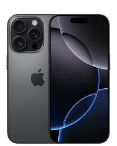
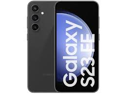

Curadoria independente
O próximo celular começa com uma boa escolha.
Desempenho, câmera e bateria traduzidos em decisões simples. Encontre a tecnologia que acompanha o seu ritmo.
01Escolha sem ruído

+ 10modelos analisados
01 / A ideia
Menos especificação solta.
Mais contexto para decidir.
O mercado muda rápido. Por isso, reunimos os modelos que fazem sentido hoje e organizamos tudo por aquilo que realmente importa no seu dia a dia.
03perfis de uso
05modelos no ranking
100%foco no usuário
02 / Encontre seu perfil
Qual é o seu próximo?

03 / Em movimento
Veja os modelos
em ação.
Uma análise direta dos 10 melhores celulares do mundo para ajudar sua próxima decisão.
04 / Em alta
Os mais escolhidos.
Uma fotografia das preferências atuais dos usuários.
| Posição | Modelo | Fabricante | Sistema |
|---|---|---|---|
| 01 | iPhone 13 | Apple | iOS |
| 02 | Galaxy S22 | Samsung | Android |
| 03 | Redmi Note 11 | Xiaomi | Android |
| 04 | Moto G82 | Motorola | Android |
| 05 | Realme 9 Pro | Realme | Android |
05 / Agora é com você